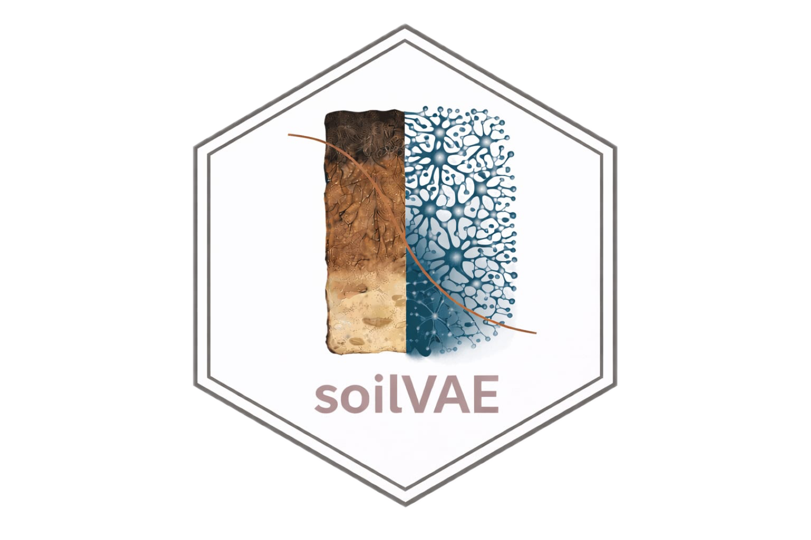
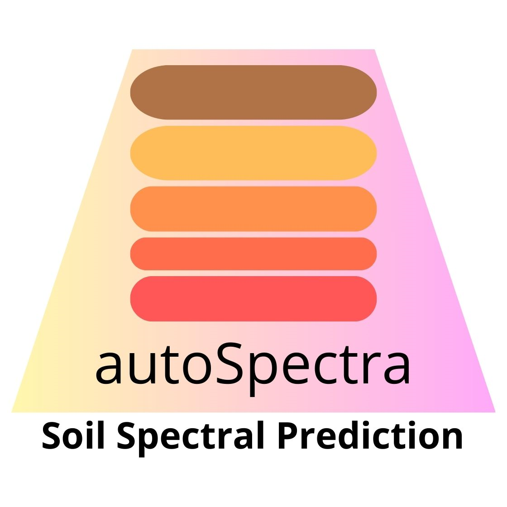
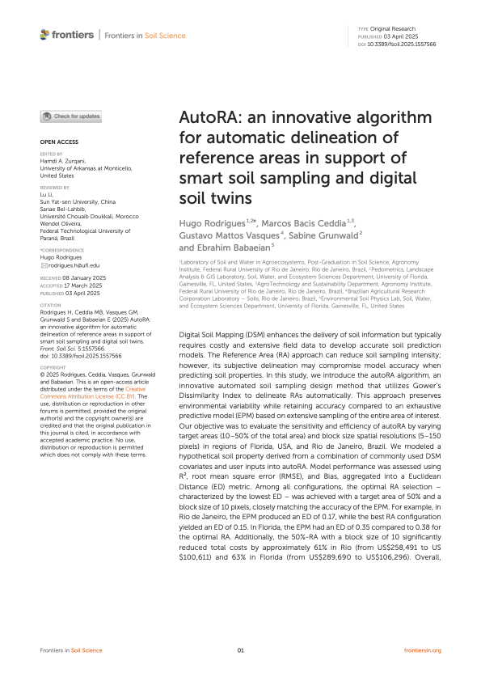
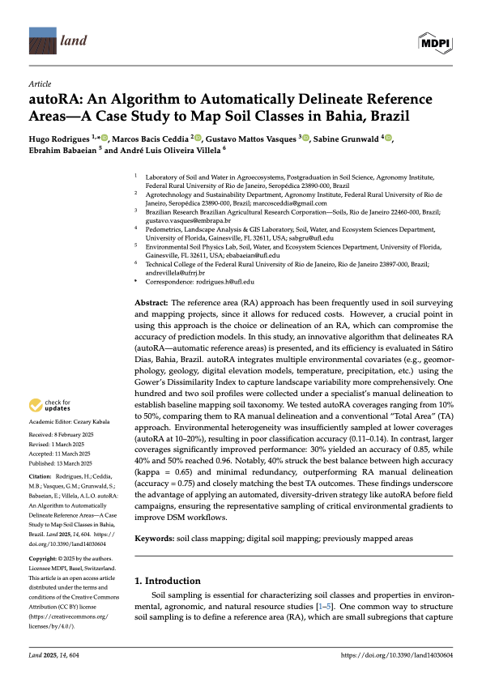
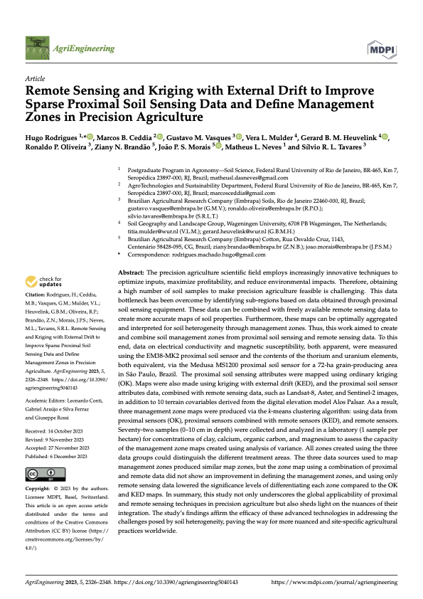
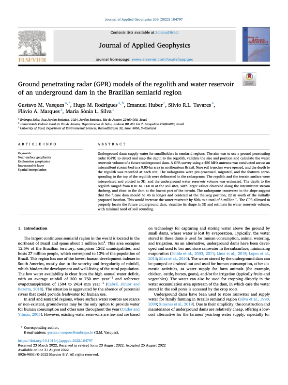

.JPG)
Hugo Rodrigues
My research focuses on soil systems, soil–water processes, and the quantitative analysis of soil information across laboratory, field, and spatial scales. Across my trajectory, I have built experience in soil laboratory data, soil sampling, in-situ measurements, pedometrics, geocomputing, and reproducible analytical workflows, with particular emphasis on integrating soil science knowledge with statistics, coding, and environmental data analysis:
- Near-surface geophysics (GPR, EMI – EM38, gamma radiometrics)
- Soil hydrological measurements (water retention, soil moisture dynamics, hydraulic behavior indicators)
- Spatial statistics
- Sampling design optimization
- Multi-source data fusion (proximal + orbital)
- Algorithm development for spatial delineation (autoRA)
- Representation learning for soil-state synthesis (soilVAE)
- Physics-informed neural networks for soil water retention curve prediction (soilFlux)
The central objective is to formalize hydro-pedological variability across space and time, separating intrinsic soil heterogeneity from management-induced change.

Supervised latent-variable regression for high-dimensional predictors such as soil reflectance spectra, using an encoder-decoder neural network with a stochastic Gaussian latent representation regularized by a Kullback-Leibler term.

Integrated platform for soil spectroscopy modeling, visualization, and prediction. Supports Vis-NIR and MIR spectra, leveraging the Open Soil Spectral Library (OSSL) to train sensor-agnostic soilVAE models. Includes a Shiny interface for interactive prediction.





- Analysis of multi-year, repeated-measures soil datasets integrating laboratory physical attributes, phosphorus-related properties, management data, and hydrological indicators
- Spatial-temporal interpretation of soil trajectories under intensive management
- Development of process-informed modeling frameworks for soil monitoring
- Latent-space representation of multivariate soil systems (soilVAE) for long-term comparison and uncertainty control
- Integration of proximal sensing, spectroscopy, and spatial modeling for system-scale inference
- Ground penetrating radar (GPR) mapping of regolith depth and subsurface water storage to support underground dam allocation for smallholder farmers in the Brazilian semiarid region
- Application of hydro-pedological assessments to integrated crop–livestock systems and soil–water best management practices in headwater catchments
- Electromagnetic induction (EM38-MK2) for soil apparent electrical conductivity mapping
- Sampling density optimization and transect spacing design
- Geostatistical modeling (OK, KED)
- Delineation of management zones in agricultural landscapes
- Integration of proximal and satellite data
- Probability theory and statistical inference
- Experimental design and regression modeling
- Bayesian statistics and hierarchical modeling
- Statistical analysis of environmental and spatial data
- Experimental erosion plots: rainfall–runoff monitoring and soil loss quantification
- Soil porosity and pore-network characterization
- Field-based soil physical analysis and hydrological response assessment